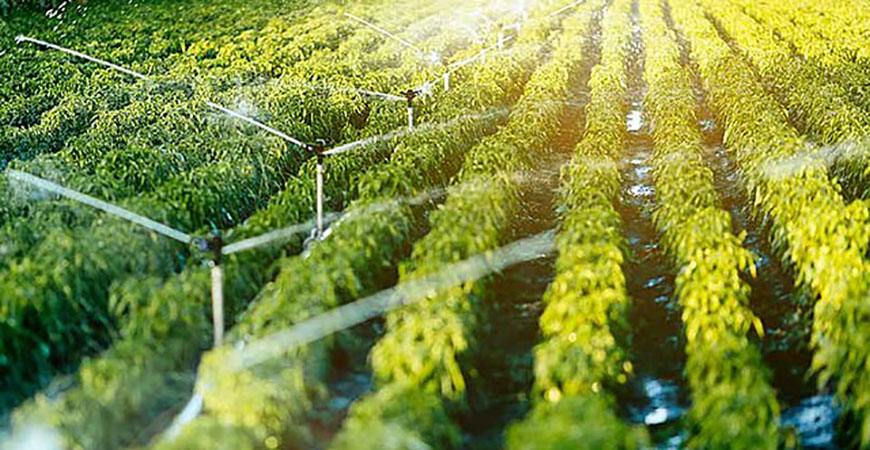

Last Year’s Drought Cost Ag Industry More Than
$1 Billion, Thousands of
Jobs, New Analysis Shows
February 24, 2022
By Lorena Anderson, UC Merced
The 2021 drought directly cost the California agriculture sector about $1.1 billion and nearly 8,750 full- and part-time jobs, according to estimates in a new analysis led by UC Merced researchers.
Once the effects on other economic sectors are considered, total impacts are estimated at $1.7 billion and 14,634 full- and part-time jobs lost.
The Economic Impacts of the 2021 Drought on California Agriculture Preliminary Report, released today, analyzes the impacts of last year’s drought in the Central Valley, the Russian River Basin and northern intermountain valley areas. The researchers developed these preliminary estimates of economic impacts using surveys, reviews of hydrological information and remote sensing data gathered from those areas and comparing them to average conditions, as well as to the 2012-2016 drought.
The report identifies at least additional 395,000 acres of idled land — roughly 385,000 acres in the Central Valley alone with respect to pre-drought conditions due to drought-related water cutbacks.
Several regions in the Sacramento valley, the west side of the San Joaquin Valley, Tulare County and Kern County were the most affected. Other drought-affected areas include the Russian River Basin and intermountain agricultural areas in Siskiyou, Shasta and Modoc counties. The crops most significantly affected by increased fallowing include rice in the Sacramento Valley, cotton in the San Joaquin Valley, and grain and field crops statewide.
“In comparison with the 2012-2016 drought, conditions were much worse for the Sacramento Valley and the Russian River Basin, yet the statewide impacts have not been as severe as in 2015 — the deepest point in the last drought,” said School of Engineering Professor Josué Medellín-Azuara, lead author of the report. “Should dry conditions persist throughout 2022, a higher tier of adaptation measures may come into play to reduce economic impacts on agriculture and communities that host thousands of households relying on agriculture for a living.”
The report also highlights strong commodity prices that have helped mitigate some economic costs of the 2021 drought. Milk prices rose because of global demand, raising revenues and offsetting some of the drought-related effects of higher production costs. The dairy sector also explored alternatives to hay and winter grains that, in some cases, increased cow milk productivity. The beef cattle sector also had to adapt to scarce winter pastures and higher forage prices, but the state’s beef cow herd increased, as did its share of the national cow herd, leading to potential revenue gains.
While Californians are familiar with drought, the 2020-21 water years were the second driest two years on record. Although precipitation deficits were widespread, drought conditions were more severe in the Sacramento Valley and the North Coast regions. A lack of atmospheric rivers and a below-average snowpack depleted most reservoirs and aquifers in 2021, the report states.
“This has been a fast-paced drought and it shows how climate change increases the challenges we face in managing water in California,” said researcher and co-author Alvar Escriva-Bou, an engineering and policy expert at the Public Policy Institute of California. “Sadly, we are going to see more and more droughts like this, so we need better tools to anticipate and minimize the socio-economic impacts.”
But drought is not only defined by the water supply, the researchers wrote. Warmer temperatures and already-dry conditions increased crop irrigation demands and widened the gap between water supply and irrigation needs.
“Warming has impacted seasonal water availability, namely through reducing spring snowmelt runoff and through increasing atmospheric thirst,” said Professor John Abatzoglou, climate expert and co-author in the report. “These factors in concert have intensified drought severity and impacts in the state and increased the need for actionable solutions to cope with drought.”
The drought hit during the early implementation of Sustainable Groundwater Management Act (SGMA) sustainability plans. The Act is designed to avoid the undesirable consequences of unsustainable groundwater use. Groundwater sustainability plans for critically overdrafted basins were submitted in 2020 and plans in other priority basins are due early this year. These plans remain in progress throughout the state for these and other priority basins. California’s increasingly variable supply of surface water and overdrafted groundwater aquifers present serious challenges for meeting societal needs, the report points out.
“It is no surprise that California leans more heavily on groundwater to help meet its water supply needs during drought. SGMA is now well underway, and it is shaping how we respond to drought, especially in the Valley. Despite the very real economic impact, this report also indicates an enormous capacity for innovation and adaptation in the agricultural industry, not limited to augmenting cattle feed with almond hulls —typically a byproduct — and also direct investments in aquifer recharge techniques and technologies,” said report co-author Professor Joshua Viers. “These innovations, coupled with better information about water application and use, will ultimately help us manage scarce water supplies more effectively.”
Funded by a $1.5 million research grant from the California Department of Food and Agriculture, Medellín-Azuara, Abatzoglou, Viers and Escriva-Bou have worked since last fall to develop this economic analysis, along with decision-support tools for the agriculture industry during droughts. Other authors include UC Merced Environmental Systems graduate students Spencer Cole and José M. Rodríguez-Flores and Professor Daniel A. Sumner from UC Davis.
“In the weeks to come, the research team will work with its expert advisory panel, stakeholders and partner groups to update ongoing drought conditions and impacts on the agricultural sector, as well as data and assessment tools, to inform drought management and decision making,” Medellín-Azuara said.